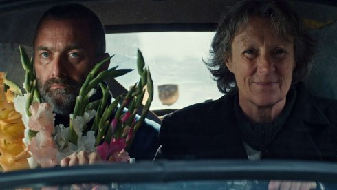

departure

Ludwig Wüst
|
103 min – HD – German B: Ludwig Wüst – K: Klemens Koscher – S: Samuel Käppeli – M: Andreas Dauböck – SD: Bernhard Maisch – T: Tjandra Warsosumarto – P: Maja Savić, Ludwig Wüst
|
saturday 13 oct 8.30 pm werkstattkino
A man leaves a woman, a woman leaves a man. Both meet for a short
while. Great changes await them at the end of this journey.
”’MONO NO AWARE’, the Japanese proverb ’the sadness for the passing
of things’ inspired me to do this film: DEPARTURE, a film, that sent
us on an intensive expedition, a cinematic trip towards the last
things, that have partly disappeared and won’t be possible
anylonger… what comes after it?” (Ludwig Wüst)
Ludwig Wüst Born in Bavaria, lives and works in Vienna since 1987. Studies from 1987 to 1990 in acting and singing at the University of Music and Performing Arts Vienna. Since 1990 director, author, actor. More than 40 productions for theater and opera in Vienna, Leipzig, Berlin, Munich and Frankfurt. Since 1999 filmmaker.
|
| Films Zwei Frauen 2006 - KOMA 2009 - Tape End 2011 - Das Haus meines Vaters 2013 - Abschied 2014 (10. UX) –Aufbruch 2018
|